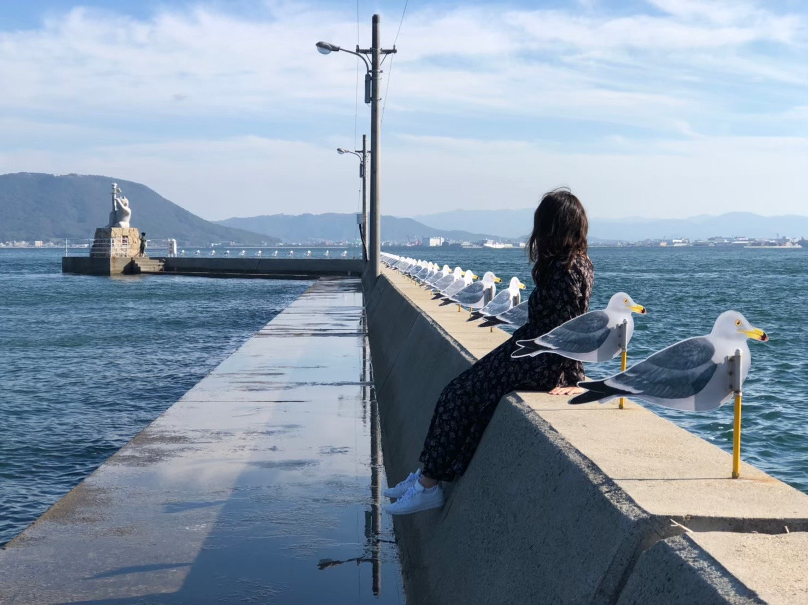
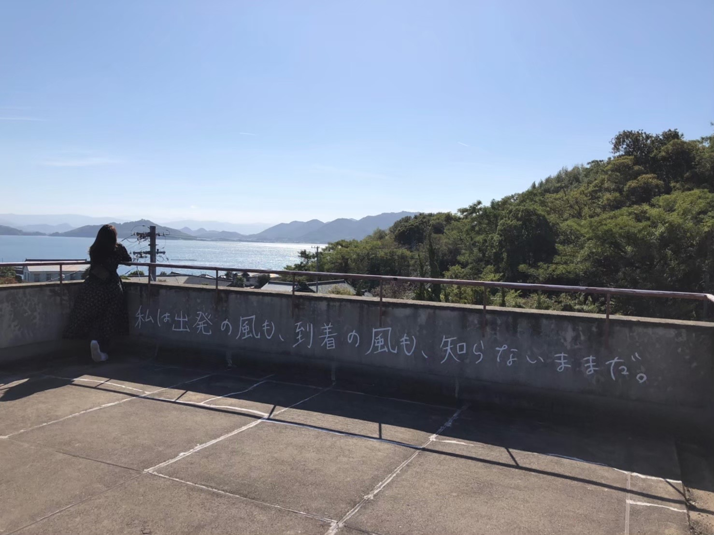
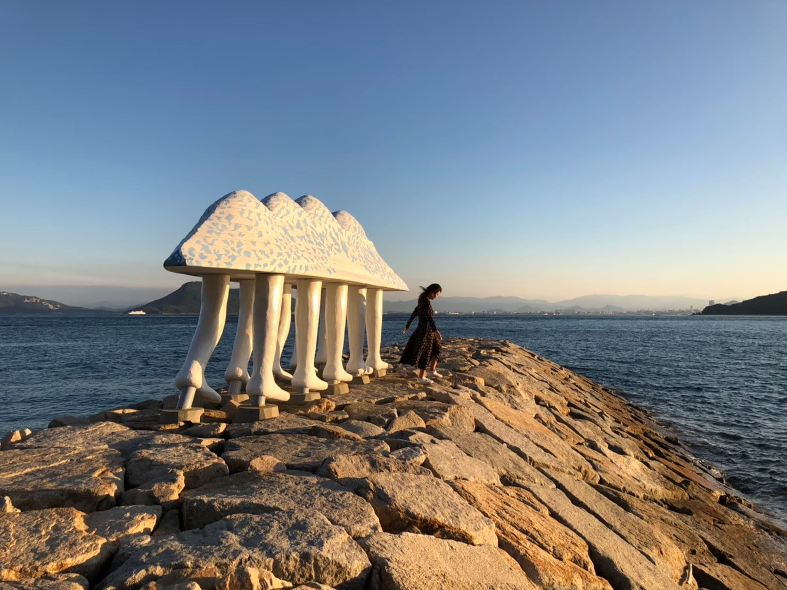
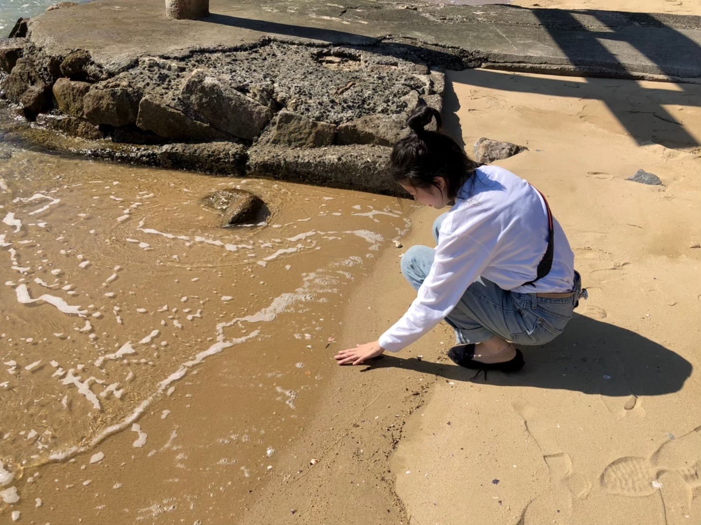

TOP
ACCESS
CONTACT

カモメの駐車場
私には春がなかった 夏もなかった 今はもう冬だ。 もし忘れたいなら そうすればいい。 覚えておきたいなら それは高くつくだろう。 過ぎ去った子供達の歌 ムニール・ファトゥミ

私は出発の風も 到着の風も 知らないままだ。
私には春がなかった 夏もなかった 今はもう冬だ。 もし忘れたいなら そうすればいい。 覚えておきたいなら それは高くつくだろう。 過ぎ去った子供達の歌 ムニール・ファトゥミ

歩く方舟
山口啓介氏による 旧約聖書に 出てくる ノアの方舟を モチーフにした作品。 コミカルさと 自然に不思議と 溶け込んでいる様子に 思わずシャッターを いわきにむかって 天災を沈めにいこうと 歩き出した方舟。 復興への願いが 込められている。
瀬戸内の海
シルクロードの 命名者でもある ドイツ人の地理学者 フォンの 『支那旅行日記』により 「これ以上のものは 世界の どこにもないであろう」 と世界中に紹介され、 今もなお風 光明媚な風景として 絶賛される地域である

貝殻集め
瀬戸内の声海でたくさんの 貝殻に出会った。 街の方に出ると おばあちゃんに出会い、 そこで綺麗に洗った貝殻を たくさん譲ってくれた 街の人との交流と 優しい海の音を その貝殻を見ていまでも 思い出す。